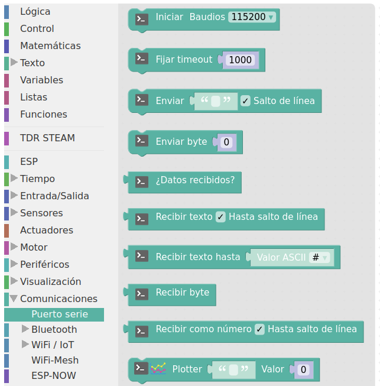
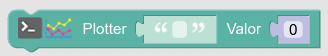

¿Datalogger?
Un sistema "datalogger" es un registrador de datos traducido al castellano. Lo que hace es guardar una serie de datos para posteriormente analizarlos y/o representarlos.
Un sistema "datalogger" es un registrador de datos traducido al castellano. Lo que hace es guardar una serie de datos para posteriormente analizarlos y/o representarlos.
En arduinoblocks como en otros sistemas de programación de ESP32 o de Arduino, tenemos comunicaciones entre la placa y el ordenador a través del cable (o incluso inalámbricas) de tipo serie. La comunicación serie es un método de transmisión de datos en el que los bits se envían uno tras otro, de forma secuencial, a través de un canal de comunicación o bus.
Arduinoblocks ofrece la opción de representación y guardado de datos en tiempo real a través de comunicación serie con la función Serial plotter.
En arduinoblocks las instrucciones relacionadas con la comunicación serie está en la categoría de bloques de comunicaciones:

Las funcionalidades más usadas son las siguientes:
| Orden | Funcionalidad |
| Establece la comunicación en el dispositivo a una velocidad en baudios (bits/segundo). En el receptor debe estar configurada la misma velocidad de transmisión. | |
| Envía una serie de caracteres (información) con o sin salto de línea. | |
| Nos devuelve verdadero en caso de haber recibido datos y falso en caso contrario. Sirve en recepción para comprobar si hemos recibido datos. | |
|  | Permite ver en la funcionalidad serial plotter la gráfica de los datos que arroja un sensor en tiempo real. En el parámetro entrecomillado se pone un descriptor (leyenda de la gráfica), y en el valor la medición de un sensor o una variable. |
Obra publicada con Licencia Creative Commons Reconocimiento Compartir igual 4.0